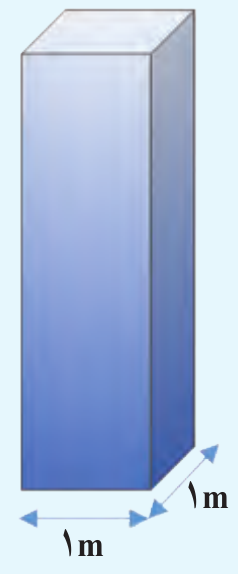

فشار
تعریف 29 فشار \(P\) که به یک سطح فرضی \(A\) درون شاره وارد می شود به صورت نسبت اندازه نیروی عمودی وارد بر این سطح به مساحت آن تعریف میشود. یکای \(SI\) فشار، پاسکال (\(Pa\)) است
\[ \require{cancel} \begin{aligned} \overset{\overset{Pa = \frac{N}{m^2} = \frac{kg}{s^2.m}}{\uparrow}}{P} & = \cfrac{\overset{\overset{N}{\uparrow}}{F} }{\underset{\underset{m^2}{\downarrow}}{A}} \end{aligned} \]
مثال 48 یک زیر دریایی تفریحی در اعماق اقیانوسی به آرامی حرکت میکند. این زیردریایی تعدادی پنجره کوچک دایره ای شکل به شعاع \(0.4 m\) دارد. اگر فشار آب در محل هر یک از این پنجره ها برابر \(9 \times 10^5 Pa\) باشد، بزرگی نیروی عمودی که آب بر سطح خارجی یکی از این پنجره ها وارد میکند چقدر است؟ (تمرین کتاب تجربی-ریاضی)
نمایش پاسخ
\[ \require{cancel} \begin{aligned} A & = \pi r^2 \\ & = 3.14 \times \cancelto{16 \times 10^{-2} m^2}{(0.4 m)^2} \\ & = 314 \times 16 \times 10^{-4} m^2 \\ & = 5024 \times 10^{-4} m^2 \\ & \simeq 0.5 m^2 \\ F & = PA \\ & = 9 \times 10^{5} Pa \times 0.5 m^2 \\ & = 4.5 \times 10^{5} N \end{aligned} \]مثال 49 جرم ستون سنگی \(0.8ton\) و مساحت قاعدهی آن \(25cm^2\) است. چه فشاری بر حسب پاسکال به سطح قاعده این ستون وارد میشود. \((g = 10 \frac{N}{kg})\)
نمایش پاسخ
\[ \require{cancel} \begin{aligned} P & = \frac{F}{A} = \frac{mg}{A} \\ & = \frac{\cancelto{800 kg}{0.8ton}\times10}{25\cancelto{10^{-4}m^2}{cm^2}}\\ & = \frac{8 \times 4}{25 \times 4} \times 10^{2+1+4} \frac{N}{kg} \\ & = 3.2 \times 10^{6} Pa \\ \end{aligned} \]روش 6 محاسبه فشار در اجسامی مثل استوانه و مکعب مستطیل
\[ \require{cancel} \begin{aligned} P & = \frac{F}{A} \\ & = \frac{mg}{A} \\ & = \frac{\rho V g}{A} \\ & = \frac{\rho \cancel{A} h g}{\cancel{A}} \\ \Rightarrow & \boxed{P = \rho g h} \end{aligned} \]
- \(h\) ارتفاع
- \(\rho\) چگالی
- \(g\) شتاب گرانشی زمین
مثال 50 مکعب مستطیلی دارای ابعاد \(20 \times 10 \times 6 cm\) و چگالی \(3\frac{g}{cm^3}\) است. بیشترین فشاری که این مکعب میتواند برسطح وارد کند چند پاسکال است؟ \((g = 10 \frac{N}{kg})\)
- \(1800\)
- \(3000\)
- \(3600\)
- \(6000\)
نمایش پاسخ
\[ \require{cancel} \begin{aligned} P_{max} & = \rho g h_{max} \\ & = 1000 \times 10 \times 0.2 \\ & = \boxed{2000 Pa} \end{aligned} \]مثال 51 مکعب مستطیلی دارای ابعاد \(20 \times 10 \times 5 cm\) و چگالی \(5\frac{g}{cm^3}\) است. بیشترین اختلاف فشاری که با قرار گرفتن روی وجههای خود میتواند ایجاد کند چند پاسکال است؟ \((g = 10 \frac{N}{kg})\)
نمایش پاسخ
\[ \require{cancel} \begin{aligned} P_{max} - P_{min} & = \rho g h_{max} - \rho g h_{min}\\ & = \rho g (h_{max} - h_{min}) \\ & = 5 \cancelto{1000\frac{\bcancel{kg}}{m^{\cancelto{2}{3}}}}{\frac{g}{cm^3}} \times 10 \frac{N}{\bcancel{kg}} \times \cancelto{15}{(20 - 5)} \times \cancelto{10^{-2} \cancel{m}}{cm} \\ & = 7.5 \times 10^{1+3+1-2} \frac{N}{m^2} \\ & = 7.5 \times 10^{3} Pa \end{aligned} \]روش 7 رابطه نسبتی فشار
\[ \frac{P'}{P} = \frac{\rho'}{\rho} \times \frac{h'}{h} \]
مثال 52 دو استوانه هم جنس روی سطح قاعدههای خود قرار دارند شعاع و ارتفاع استوانه اول دو برابر شعاع و ارتفاع استوانه دوم است. فشار استوانهی اول چند برابر فشار استوانه دوم است؟
- \(1\)
- \(2\)
- \(4\)
- \(8\)
نمایش پاسخ
گزینه ۲:
\[ \require{cancel} \begin{aligned} \frac{P'}{P} & = \frac{\cancelto{\cancel{\rho}}{\rho'}}{\cancel{\rho}} \times \frac{\cancelto{2}{h'}}{\cancel{h}} = 2 \end{aligned} \]مثال 53 دو مکعب تو پر فلزی \(A\) و \(B\) روی یک سطح افقی قرار دارند. اگر طول هر ضلع مکعب \(A\) دو برار طول ضلع مکعب \(B\) و چگالی آنها به ترتیب \(\rho_A = 8 \frac{g}{cm^3}\) و \(\rho_B = 6 \frac{g}{cm^3}\) باشد فشاری که مکعب \(A\) به سطح وارد میکند چند برابر فشار مکعب \(B\) است.
- \(\frac{1}{3}\)
- \(\frac{2}{3}\)
- \(\frac{4}{3}\)
- \(\frac{8}{3}\)
نمایش پاسخ
\[ \require{cancel} \begin{aligned} \frac{P_A}{P_B} & = \frac{\rho_A \times h_A}{\rho_B \times h_B} \\ & = \frac{8 \times \cancel{2}}{\cancelto{3}{6} \times 1} \\ & = \boxed{\frac{8}{3}} \end{aligned} \]فشار در شارهها
تعریف 30 منظور از شارهها، مایعات و گازها هستند.
آزمایشگاه مجازی فشار در شارهها
تعریف 31 فشار ناشی از مایع فقط به جنس مایع (چگالی) و ارتفاع مایع از سطح آزاد آن بستگی دارد.
\[ P = \rho g h \]
شکل 19: فشار در نقاط هم تراز یک مایع ساکن مانند نقاط \(A\), \(B\) و \(C\) در شکل یکسان است و به شکل ظرف بستگی ندارد.
نکته. سطح مایعات رو مانند ترازو تصور کنید که روی آنها فشار یکسانی وارد میشود.
مثال 54 نقاط \(A\) و \(B\) در عمق یکسانی از سطح آب یک دریاچه قرار گرفته اند. فشار در نقطه \(A\) چقدر است؟ در نقطه \(B\) چطور؟
شکل 20: محاسبه فشار بر حسب عمق از سطح دریاچه
چگالی آب دریاچه را \(1000 \frac{kg}{m^{3}}\) و فشار هوا در سطح دریاچه را \(1.01 \times 10^{5} Pa\) در نظر بگیرید.
نمایش پاسخ
\[ \require{cancel} \begin{aligned} P & = P_{0} + \rho gh \\ & = 1.01 \times 10^{5} Pa + 10^{3} \cfrac{kg}{m^{3}} \times 9.8 \frac{N}{kg} \times 12 m\\ & = 2.19 \times 10^{5} Pa \end{aligned} \]مثال 55 با باز کردن در بطری، آب از سوراخهای ایجاد شده در بطری، با فشار متفاوت خارج میشود. سرعت خروج آب از کدام سوراخ بیشتر است؟

شکل 21: محاسبه فشار بر حسب عمق از سطح شاره
تعریف 32 مایعات در حال تعادل به هر سطحی درون خود نیروی عمودی وارد میکنند.

شکل 22: شارهای (مایع یا گاز) ساکن به جداره یک ظرف یا سطح جسم، نیرویی عمودی وارد میکند.
تعریف 33 فشار ناشی از مایع فقط مربوط به وزن مایع نیست گاهی نیروی عکس العمل دیواره و ظرف هم میتواند این فشار را تامین کند.
مثال 56 در شکل زیر سه ظرف با سطح مقطع یکسان تا ارتفاع مساوی از یک مایع پر شدهاند. نیرویی که از مایع به سه ظرف وارد میشود با وزن مایع درون ظرف چه ارتباطی دارد.
نمایش پاسخ
\[ \require{cancel} \begin{aligned} P & = \rho g h \\ P_1 & = P_2 = P_3 \\ \frac{F_1}{A} & = \frac{F_2}{A} = \frac{F_3}{A} \\ F_{P_1} & = F_{P_2} = F_{P_3} \\ \overset{m_1 = m}{\Longrightarrow} F_{w_1} & = F_{P_1} \\ \overset{m_2 < m}{\Longrightarrow} F_{w_2} & < F_{P_2} \\ \overset{m_3 > m}{\Longrightarrow} F_{w_3} & > F_{P_3} \\ \end{aligned} \]تعریف 34 اصل پاسکال: اگر فشار اضافه به سطح مایع وارد شود مایع این فشار را به تمام نقاط خود یکسان انتقال میدهد.
شکل 23: انتقال فشار در مایعات
\[ \begin{aligned} P_1 & = P_2 \\ \frac{F_1}{A_1} & = \frac{F_2}{A_2} \\ \frac{f}{a} & = \frac{F}{A} \end{aligned} \]
مثال 57 در شکل مقابل شعاع قاعده استوانه بزرگ ۱۰ برابر شعاع قاعده استوانه کوچک است. اگر نیروی ۲۰ نیوتن به سطح قاعده کوچک وارد شود. چه نیرویی به سطح قاعده پیستون بزرگ وارد میشود؟

- \(20000\)
- \(2000\)
- \(200\)
- \(20\)
نمایش پاسخ
\[ \require{cancel} \begin{aligned} \frac{f}{a} & = \frac{F}{A} \\ \frac{\cancelto{20}{f}}{\cancel{\pi} \bcancel{r^2}} & = \frac{F}{\cancel{\pi} \cancelto{100 \bcancel{r^2}}{R^2}} \\ F & = \boxed{2000 N} \end{aligned} \]تعریف 35 محاسبه اختلاف فشار در دو سطح یک شاره:
\[ P_{2} = P_{1} + \rho g h \]
شکل 24: (الف) بخشی از شاره ساکن (ب) نیروهای وارد بر این بخش از شاره در راستای قائم.
مثال 58 جسم مکعبی به طول ضلع \(20cm\) درون شاره ای غوطه ور و در حال تعادل است. فشار در بالا و زیر جسم به ترتیب برابر \(100\) و \(105\) کیلوپاسکال است. چگالی شاره چند کیلوگرم بر متر مکعب است؟
شکل 25: مکعب غوطهور هم چگالی با مایع است.
نمایش پاسخ
\[ \begin{aligned} P_{2} - P_{1} & = \rho g h \\ \Rightarrow \rho & = \frac{P_{2} - P_{1}}{gh} \\ & = \frac{105 Pa - 100 Pa}{10 \frac{N}{kg} \times 20 \times 10^{-2} m} \\ & = \frac{5 \frac{N}{m^{2}}}{2 \frac{N.m}{kg}} \\ & = 2.5 \frac{kg}{m^{3}} \\ \end{aligned} \]تعریف 36 محاسبه فشار بر حسب عمق از سطح شاره
اگر فشار هوا به سطح مایع وارد شود فشار کل به ته مایع برابر است:
\[ P = P_{0} + \rho g h \]
شکل 26: محاسبه فشار بر حسب عمق از سطح شاره
مثال 59 شناگری در عمق \(5\) متری از سطح آب دریاچه ای شنا میکند. فشار در این عمق چقدر است؟ اگر مساحت پرده گوش را (\(1cm^2\)) یک سانتی متر مربع فرض کنیم، بزرگی نیرویی که به پرده گوش این شناگر وارد می شود چند نیوتون است؟ فشار هوای محیط را \(1.01 \times 10^{5}\) بگیرید.
نمایش پاسخ
\[ \begin{aligned} P_{5m} & = P_{0} + \rho gh \\ & = 10^{5} Pa + 1000 \frac{kg}{m^3} \times 10 \frac{N}{kg} \times 5 m \\ & = 10 \times 10^{4} Pa + 5 \times 10^{4} Pa \\ & = (10 + 5) \times 10^{4} Pa \\ & = 15 \times 10^{4} Pa \\ & = 1.5 \times 10^{5} Pa \\ \Rightarrow P_{Ear} & = \frac{F_{Ear}}{A_{Ear}} = P_{5m} \\ \Rightarrow F_{Ear} & = P_{5m} A_{Ear} \\ & = 1.5 \times 10^{5} Pa \times 10^{-4} m^{2} \\ & = 1.5 \times 10^{1} N \end{aligned} \]مثال 60 اختلاف بین فشار هوای بالا و پایین برج آزادی، با ارتفاع 45 متر، چقدر است؟ چگالی هوا را تقریباً \(1\frac{kg}{m^3}\) بگیرید.
نمایش پاسخ
\[ \begin{aligned} P_{2} & = P_{1} + \rho gh \\ P_{2} - P_{1} & = \rho gh \\ & = 1 \frac{kg}{m^3} \times 10 \frac{N}{kg} \times 45 m \\ & = 450 Pa \\ & = 4.5 \times 10^{1} Pa \end{aligned} \]مثال 61 ارتفاع برج میلاد \(435 m\) است. اگر چگالی هوا \(1. 3 \frac{kg}{m^3}\) ثابت فرض شود. اختلاف فشار هوا در بالا و پایین برج چند پاسکال است. \((g = 9.8 \frac{N}{kg})\)
- \(4391\)
- \(5391\)
- \(5631\)
- \(8391\)
نمایش پاسخ
\[ \require{cancel} \begin{aligned} \Delta P & = \rho g \Delta h \\ & = \cancelto{\overset{\pm 3\%}{\cong} 1}{1.03} \times \cancelto{\overset{\pm 2\%}{\cong} 10}{9.8} \times 435 \\ & = 4350 \overset{err\%<1\%}{\cong} 4391 \\ err\% & = (1 - \frac{4350}{4391}) \times 100 \\ & = 0.93 \% < 1 \% \end{aligned} \]مثال 62 در یک لوله U شکل، مقداری جیوه قرار دارد. در شاخه سمت راست لوله آن قدر آب می ریزیم تا ارتفاع آب به \(34cm\) برسد. اختلاف ارتفاع جیوه در دو شاخه چند سانتیمتر است؟ (\(\rho_{w} = 1000 \frac{kg}{m^3},\rho_{m} = 13600 \frac{kg}{m^3}\))

شکل 27: لوله U شکل
نمایش پاسخ
نقاط \(A\) و \(B\) هم ترازاند. پس:
\[ \begin{aligned} P_{A} & = P_{B} \\ P_{0} + \rho_{m}gh_{m} & = P_{0} + \rho_{w}gh_{w} \\ \rho_{m} h_{m} & = \rho_{w}h_{w} \\ \Rightarrow h_{m} & = \cfrac{\rho_{w}h_{w}}{h_{m}} \\ & = \cfrac{ 1000 \frac{kg}{m^{3}} \times 34 \times 10^{-2} m }{ 13600 \frac{kg}{m^{3}} } \\ & = \cfrac{1}{4} \times 10^{-2} m \\ & = 2.5 cm \end{aligned} \]مثال 63 در شکل مقابل داخل لوله آب باشد، اختلاف فشار در مخزن گاز \(A\) و \(B\) چند پاسکال است. \((\rho_{w} = 1 \frac{g}{cm^3},\; g = 10 \frac{N}{kg})\)
- \(20\)
- \(200\)
- \(2000\)
- \(20000\)
نمایش پاسخ
\[ \require{cancel} \begin{aligned} P_{A} - P_{B} & = \rho g h \\ & = 3000 \times 10 \times 0.20 \\ & = \boxed{6 \times 10^{3} Pa} \end{aligned} \]فشار هوا
تعریف 37 برای محاسبه اختلاف فشار بین دو نقطه از هوا که اختلاف ارتفاع قابل توجهی دارند، باید توجه کنیم که با افزایش ارتفاع از سطح زمین، چگالی هوا کاهش می یابد
شکل 28: (الف) با افزایش ارتفاع از سطح زمین، چگالی و فشار هوا کاهش می یابد. (ب) نمودار فشار هوا برحسب ارتفاع از سطح دریای آزاد.
در هواشناسی و روی نقشه های آب و هوا، معمولا از یکای بار (\(bar\)) برای فشار هوا استفاده می کنند. به طوری که داریم:
\[ 1bar = 1 \times 10^5 \frac{N}{m^2} = 10^5 Pa \]
مثال 64 یک ستون به سطح مقطع \(1m^{2}\) در نظر بگیرید که از سطح دریای آزاد تا بالاترین بخش جو زمین ادامه می یابد. اگر فشار هوا را در سطح دریا \(1bar\) در نظر بگیریم، چند کیلوگرم هوا در این ستون فرضی وجود دارد؟ چند درصد این جرم تا ارتفاع \(9\) کیلومتری این ستون فرضی قرار دارد؟

نمایش پاسخ
\[ \begin{aligned} P & = \frac{F}{A} \\ \Rightarrow F & = P \times A \\ & = 10^{5} Pa \times 1 m^{2} \\ & = 10^{5} N \\ \Rightarrow F & = W = mg \\ \Rightarrow 10^{5} N & = m \times10 \frac{N}{kg} \\ \Rightarrow m & = 10^{4} kg \end{aligned} \] با توجه به نمودار، حدود هفتاد درصد این جرم، از سطح زمین تا ارتفاع کیلومتری توزیع شده است.تعریف 38 فشار سنج یا بارومتر وسیله ای ساده که برای اندازه گیری فشار جو به کار می رود. فشارسنج هوا شامل یک لوله شیشهای بلند با یک سر بسته است که از جیوه پر شده و سپس در یک ظرف محتوی جیوه به طور وارون قرار گرفته است فضای خالی باالی ستون جیوه تنها محتوی بخار جیوه است که فشار آن ناچیز بوده و در عمل برابر صفر فرض می شود.
شکل 29: فشارسنج جیوهای که برای اندازهگیری فشار جو به کار میرود.
فشار در نقطه \(B\) برابر \(\rho g h\) و در نقطه \(A\) برابر \(P_{0}\) است. چون نقاط \(A\) و \(B\) همترازند، میتوان نوشت:
\[ \begin{aligned} P_{A} & = P_{B} \\ \Rightarrow P_{0} & = \rho g h \end{aligned} \]
بنابراین فشارسنج هوا، فشار جو را به طور مستقیم از روی ارتفاع ستون جیوه نشان میدهد که در سطح دریای آزاد این ارتفاع حدود \(760mm\) است. به همین دلیل در بسیاری موارد فشار اندازهگیری شده برحسب میلی متر جیوه \((mmHg)\) یا سانتی متر جیوه \(cmHg\) بیان میشود.
نکته. برای سنجش فشار هوا از جیوه استفاده میشود به دلیل چگالی بالای جیوه ارتفاع ستون جیوه کمتر از هر مایع دیگری میشود.
مثال 65 فشار هوا برحسب \(cmHg\) چگونه به \(Pa\) تبدیل میشود؟
نمایش پاسخ
\[ \begin{aligned} P & = \rho g h \\ 1 cmHg & = 13600 \frac{\bcancel{kg}}{m^\cancelto{2}{3}} \times \cancelto{(100 - 2) \times 10^{-1}}{9.8} \frac{N}{\bcancel{kg}} \times 10^{-2} \cancel{m} \\ & = (13600 - 272) \times 10^{-1} \frac{N}{m^2}\\ & = 13328 \times 10^{-1} Pa \\ & \simeq 1.3 \times 10^{2} Pa \end{aligned} \]نکته. به افتخار توریچلّی، \(1mmHg\) را یک تور \((torr)\) مینامند.
مثال 66 اگر به جای جیوه از آب و یا روغن استفاده میشود. ارتفاع ستون هر یک از مایعات را محاسبه کنید.
مثال 67 در شکل مقابل فشار گاز مخزن چند کیلو پاسکال است؟ \((\rho_{Hg} = 13.6 \frac{g}{cm^3},\; g = 10 \frac{N}{kg}, \; P_0 = 76 cmHg)\)
- \(10^2\)
- \(10^3\)
- \(10^4\)
- \(10^5\)
نمایش پاسخ
\[ \require{cancel} \begin{aligned} P_{0} & = P_{1cmHg} + P_{source} \\ P_{source} & = \cancelto{P_{75cmHg}}{P_{0}} - P_{1cmHg} \\ & = \rho_{Hg} \times g \times h \\ & = \cancelto{\overset{\pm 3\%}{\cong} 14000}{13600} \times 10 \times 0.75 \\ & = 1.05 \times 10^{5} \\ & \simeq \boxed{10^{5} Pa} \end{aligned} \]مثال 68 در شکل مقابل فشار پیمانهای گاز \(B\) و فشار \(A\) را برحسب پاسکال و سانتیمتر جیوه مشخص کنید. \((g = 9.8 \frac{N}{kg})\)
نمایش پاسخ
\[ \require{cancel} \begin{aligned} P_B & = P_0 + P_{15cmHg} \\ P_B - P_0 & = \boxed{P_{15cmHg}} \\ & = \rho g h \\ & = \cancelto{\overset{\pm 3\%}{\cong} 14 \times 10^{3}}{13600} \times \cancelto{\overset{\pm 2\%}{\cong} 10}{9.8} \times \frac{15}{100} Pa \\ & \simeq \boxed{2.1 \times 10^{4} Pa} \\ P_A & = P_B + P_{10cmHg} \\ & = P_0 + P_{15cmHg} + P_{10cmHg} \\ & = P_{75cmHg} + P_{15cmHg} + P_{10cmHg} \\ & = \boxed{P_{100cmHg}} \\ & = \rho g h \\ & = \cancelto{\overset{\pm 3\%}{\cong} 14 \times 10^{3}}{13600} \times \cancelto{\overset{\pm 2\%}{\cong} 10}{9.8} \times 1 Pa \\ & = \boxed{1.4 \times 10^{5}Pa} \end{aligned} \]مثال 69 در شکل مقابل فشار هوای محبوس در بالا لوله را برحسب پاسکال و سانتیمتر جیوه مشخص کنید. \((P_0 = 75 cmHg,\; g = 9.8 \frac{N}{kg})\)
نمایش پاسخ
- الف)
\[ \require{cancel} \begin{aligned} P_{20cmX} & = P_{?cmHg} \\ \rho_{X} \times h_{X} & = \rho_{Hg} \times h_{Hg}\\ h_{X} & = \frac{\rho_{Hg} \times h_{Hg}}{\rho_{X}} \\ & = \frac{\cancel{3.4} \times \cancelto{5}{20} }{\cancelto{\cancel{4}}{13.6}} \\ & = 5 cm \\ \cancelto{P_{75cmHg}}{P_0} & = P_{air} + \cancelto{P_{5cmHg}}{P_{20cmX}} \\ P_{air} & = P_{75cmHg} - P_{5cmHg} \\ & = \boxed{P_{70cmHg}} \\ & = \cancelto{\overset{\pm 3\%}{\cong} 14 \times 10^{3}}{13600} \times \cancelto{\overset{\pm 2\%}{\cong} 10}{9.8} \times \frac{70}{100} Pa \\ & \simeq \boxed{9.8 \times 10^{4} Pa} \end{aligned} \]
- ب)